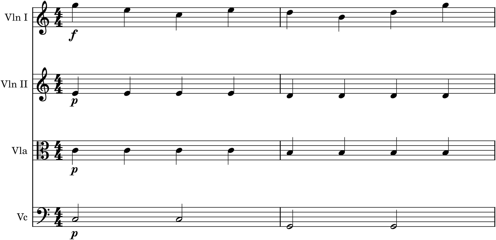

Of all the problems that face someone writing for many instruments at once, one stands above the rest: balance — making sure the listener hears the right thing at the right moment. You can choose beautiful colours and lay out an ideal texture, but if the melody is buried under its accompaniment, or the inner parts growl louder than the tune, the music fails, no matter how good the notes are. Balance is the orchestrator’s constant, practical concern — the difference between a score that sounds clear and one that sounds like mud — and, happily, it comes down to a small set of understandable principles rather than mystery. This chapter gathers them.
37.1The first question: who is in front?
Every orchestral moment has a foreground and a background. Usually the foreground is the melody and the background is its accompaniment; in a contrapuntal passage several lines share the front; in a homophonic block the whole texture is foreground together. Before you can balance a passage you must decide what belongs in front — and the answer can change bar by bar. The single most common failure in beginners’ scores is that everything is written as though it were equally important, so nothing stands out and the ear has nothing to follow. Ask, always, the orchestrator’s first question: who is in front here, and who is supporting? Once you have decided, every balance technique below serves that decision.
37.2Balance by dynamics
The most direct way to bring a line forward is the obvious one: mark it louder, and mark the accompaniment softer. This is not a crude fix but standard practice — orchestral scores are full of melodies marked f over accompaniments marked p, precisely so the tune sits on top.

The dynamics in Figure 37.1 do the balancing work: a two-level gap between the melody and its support is often all it takes to make the texture legible. Note that these markings are relative — the point is not the absolute volume but the difference between foreground and background. When you want the whole passage louder, raise everything together and keep the gap; the melody stays in front because it stays louder than its accompaniment, whatever the overall level.
37.3Balance by numbers and doubling
Dynamics are not the only lever. Weight of numbers balances too: in an orchestra the melody is often given to many instruments in unison or octaves while the accompaniment is left to a few, and the sheer number of players carrying the tune lifts it above the rest (this is why the first violins — the largest section — so often have the melody). Doubling the melody (Chapter 34) is the same idea: put two or three instruments on the tune and one on the accompaniment, and the tune wins by force of numbers as well as by dynamics. Conversely, if an inner part threatens to cover the melody, thin it — give it fewer instruments, or drop a doubling — rather than only turning it down. Balance is as much about how many play a line as about how loud they are marked.
37.4Balance by register
Register is a quieter but powerful balancing force, because the ear naturally attends to certain registers over others. A melody in a high, clear register cuts through easily; the same melody buried in the low-middle of the texture, tangled among the accompaniment, struggles to be heard however loud it is marked. So a reliable way to make a line stand out is to separate it in pitch — put the melody clearly above (or, for a bass melody, clearly below) the accompanying parts, leaving space around it. Instruments in their bright registers (Chapter 33) also project more than the same instruments in their weak registers, so giving the melody to an instrument in its strong range, and keeping the accompaniment in more neutral registers, tips the balance the right way. Register and balance are inseparable: much of balancing is simply placing each line where it can be heard.
37.5Keeping the middle clear
Now the specific hazard named in this chapter’s promise: the muddy middle. The low-middle register — roughly the octaves below middle C — is where orchestral sound most easily turns thick and indistinct, because many instruments crowd there, close intervals beat against one another, and the ear separates pitches less well down low (Chapter 34). Pile several active parts into that region and the result is a growl in which nothing is clear. The remedies are simple and worth making habits:
- Keep the bass open. Give the low register air — a single clear bass line, wide intervals — not a cluster of close notes.
- Don’t crowd the low-middle. Spread the harmony upward; leave the muddy region sparse.
- Keep inner parts simple down low. Busy, fast writing in the low-middle blurs; save activity for clearer registers.
- Mind close thirds low down. Thirds and seconds that sound fine up high growl in the bass — space them wider.
Follow these and the middle of your texture stays transparent, so that the parts you do place there can be heard rather than smeared together.
37.6Balance is heard, not calculated
A closing caution, and an encouragement. There are no exact formulas here — a trumpet is louder than a flute, brass covers strings, a high line carries over a low one, but the actual balance of a passage depends on register, dynamics, numbers, doubling, and the specific instruments all at once, in combinations no rule fully predicts. This is precisely why orchestrators, from the beginning, have learned balance by ear: you write, you listen, and you adjust what you hear covering or being covered. Software has made this easier than at any time in history — you can hear a full score played back the instant you write it, and fix the balance before a single player is hired. The principles in this chapter tell you what to try; your ear, checking the result, tells you whether it worked. Trust it, and revise until the right thing is in front.
In MuseScore
Balance is the one aspect of orchestration you can test directly in MuseScore, because playback lets you hear exactly what is covering what.
- Set the dynamic gap. Select the melody and add a dynamic (the Dynamics palette, or press the relevant marking) of f or mf; select the accompaniment and mark it p — as in Figure 37.1. Play it and hear the melody come forward.
- Use the Mixer (F10) to fine-tune the relative levels of instruments beyond the written dynamics, and to solo or mute parts so you can hear one line at a time and find what is muddy.
- Fix a muddy middle by moving crowded inner parts up out of the low-middle register, opening the bass, and thinning busy low writing — then play again and confirm it cleared.
- Balance by doubling: if a melody is still weak, copy it onto a second instrument (Chapter 34) rather than only raising its dynamic, and hear it strengthen by numbers.
Try it: take a melody-and-accompaniment passage where the tune is hard to hear, and balance it three ways in turn — first by marking the melody louder and the accompaniment softer, then by doubling the melody with a second instrument, then by raising the melody into a clearer register — playing back after each. You will hear each technique bring the tune forward, and learn by ear how they combine. Balancing by listening, and revising until the right line is in front, is the daily craft of orchestration.